01 / 個人品牌
Threads 個人品牌
3 個月 457 萬瀏覽
以職場觀點經營個人帳號，用選題企劃與標題設計，讓內容觸及非粉絲。爆文〈向上管理的 7 個潛規則〉單篇 8.2 萬瀏覽。
- 單月瀏覽
- 56 萬
- 總互動
- 7.9 萬
- 粉絲
- 3,500+
選題企劃・標題設計・內文撰寫・數據洞察
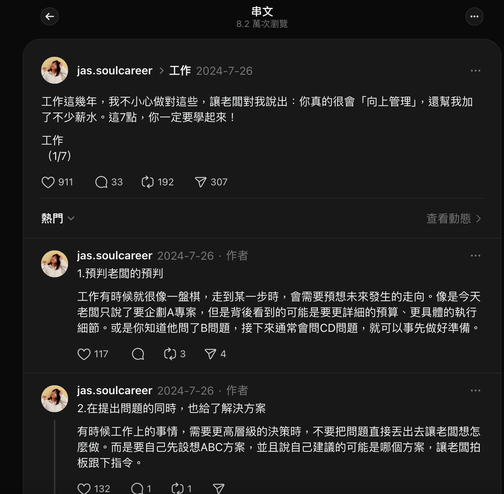
Jasmine TsaiSocial Marketing · Short Video · AI
7 年社群行銷經驗。現在用 Threads 海巡、短影音剪輯和一對一陪跑，幫個人品牌和小店家被更多人看見。
Chapter I
一些數字和案例，分享給你參考
0萬
Threads 3 個月累積瀏覽
0+
堂線上課程從 0 打造
0篇
SEO 內容主導產出
0萬
品牌社群總觸及
曾任科技業產品行銷與產品經理，經營過個人品牌、企業社群與線上課程。這些經驗讓我做每一件事時，從第一天就在想：誰會看？怎麼被看見？
01 / 個人品牌
以職場觀點經營個人帳號，用選題企劃與標題設計，讓內容觸及非粉絲。爆文〈向上管理的 7 個潛規則〉單篇 8.2 萬瀏覽。
選題企劃・標題設計・內文撰寫・數據洞察

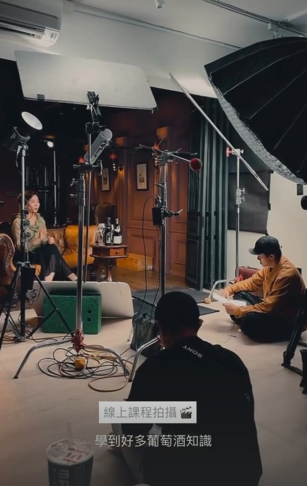
02 / 課程製作
從主題命名、模組結構到銷售頁文案，與設計師、攝影團隊協作落地。類型涵蓋 AI、求職、數據、行銷、葡萄酒等。
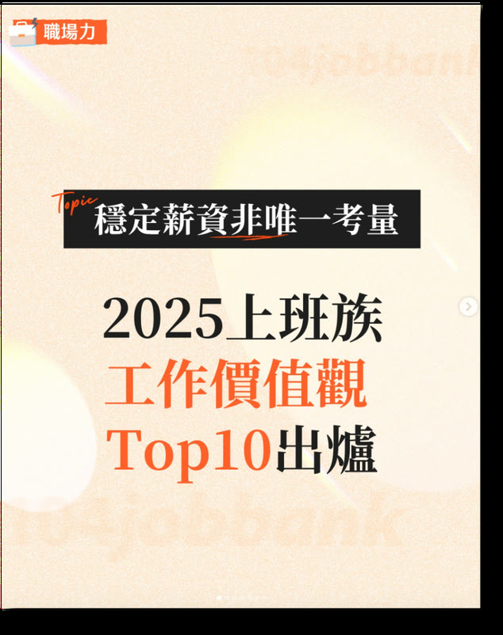
03 / 品牌社群
從內部報告提煉受眾在意的切角，轉譯成有共鳴的社群內容。LinkedIn 獵才顧問貼文互動率 27.2%，遠高於平台平均。
04 / SEO 內容
從內容規劃、撰寫到帶領 3 位實習夥伴，聚焦 ChatGPT 與 AI 工具熱門關鍵字，再搭配內容策展活動導入會員。
96親自撰寫
312帶領實習夥伴
監製、提詞、攝影協作到現場互動建議：課程不只寫在簡報上。
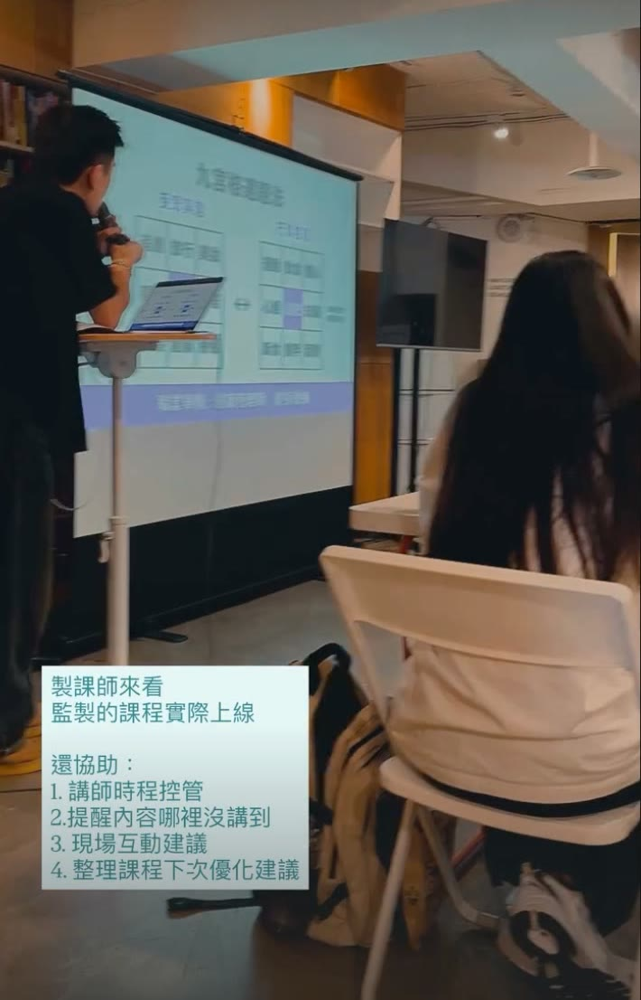
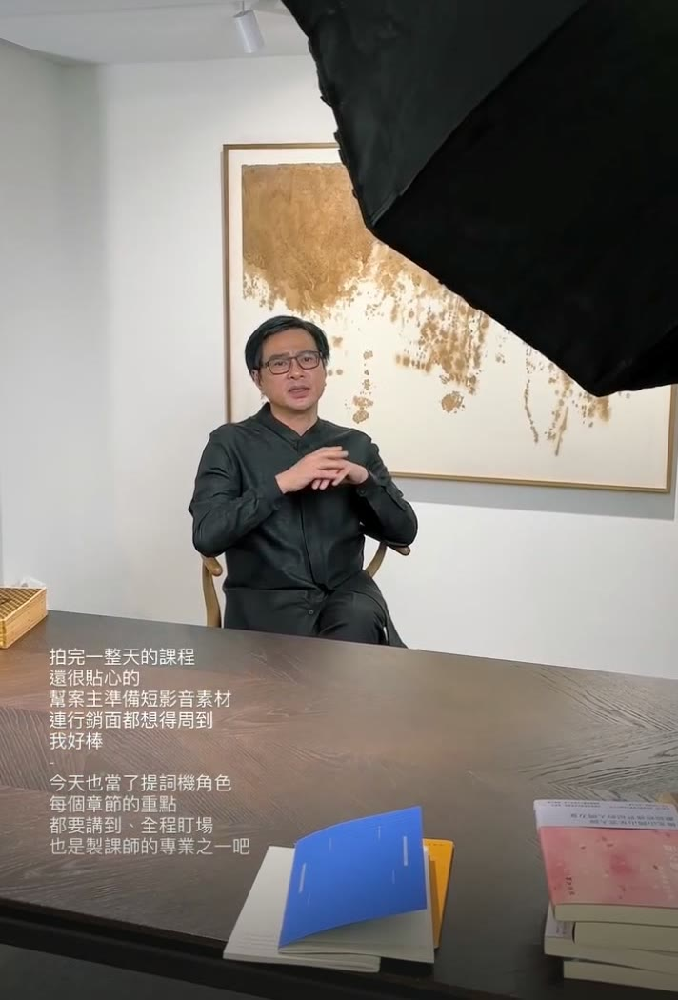
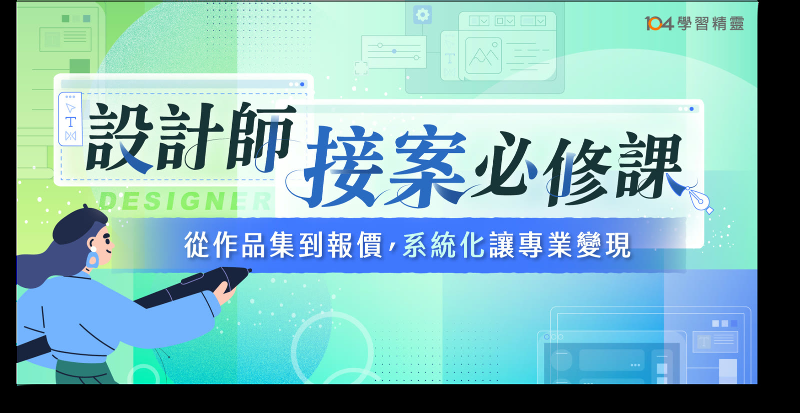
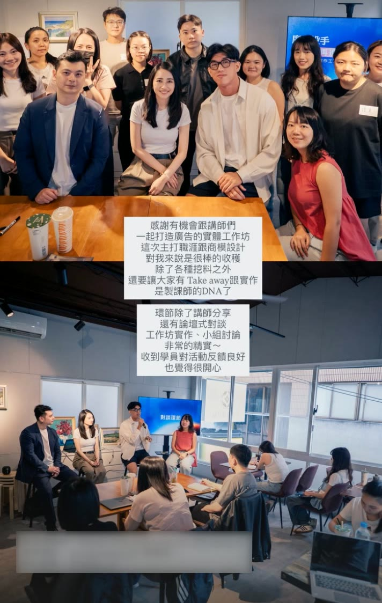
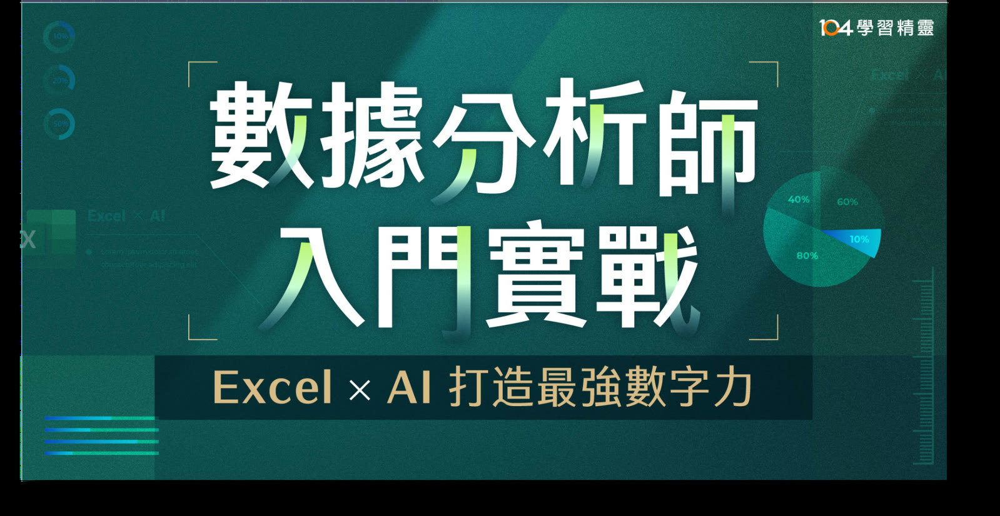
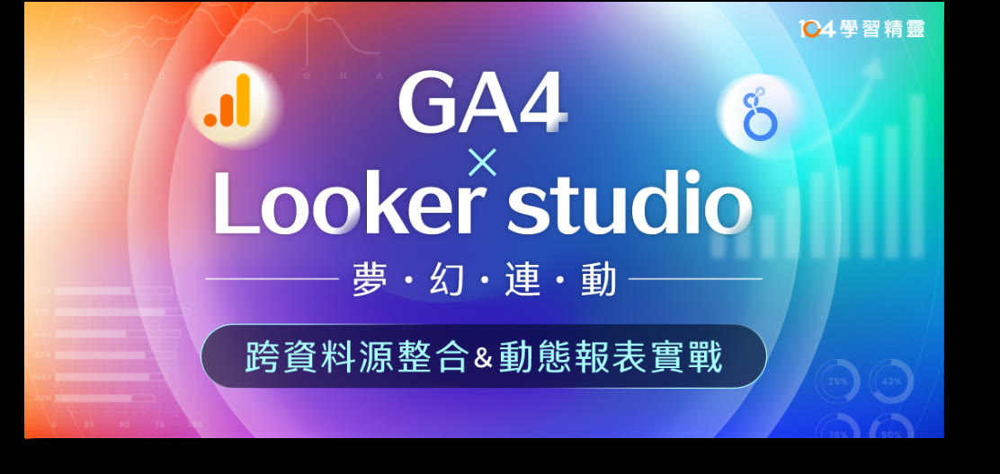
Chapter II
從企劃、口說到剪輯，都是自己動手做
職場觀點口說：拆解 AI 時代的工作節奏與休息。
1080×19201:0130 fps
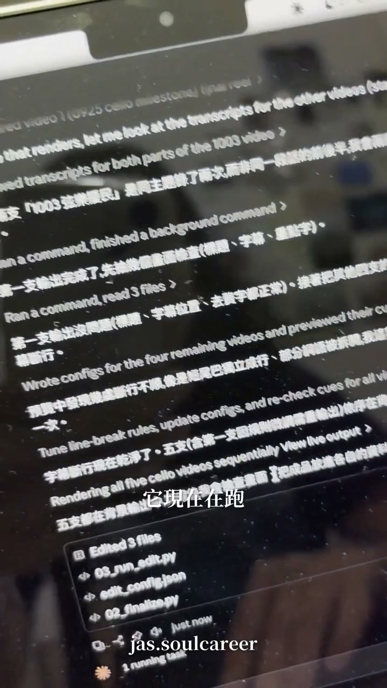
把剪輯流程自動化的幕後：一次處理四支影片。
1080×19200:2230 fps
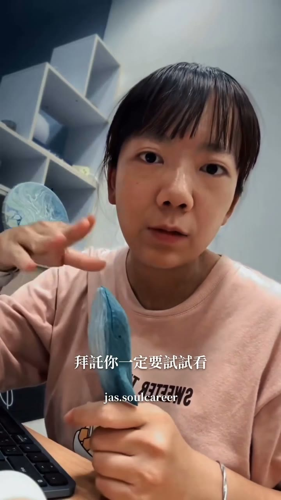
自己的產品自己介紹：把功能轉譯成日常情境。
1080×19201:1430 fps
戶外紀錄 × 個人敘事，把生活經驗變成觀點。
1080×19200:4030 fps
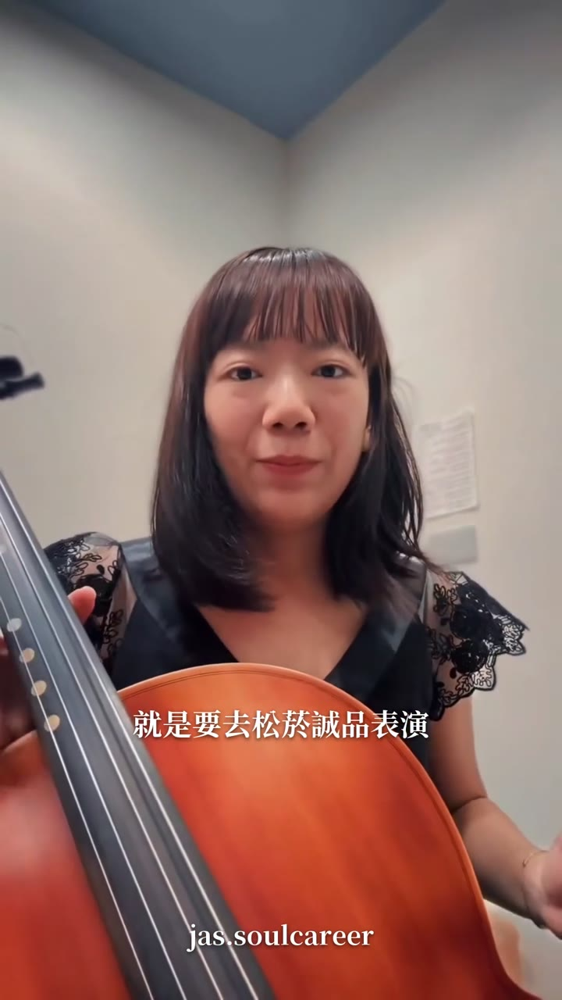
成人學琴的真實紀錄，個人品牌的生活面。
1080×19200:4630 fps
Chapter III
希望對正在經營的你有幫助
Chapter IV
不確定哪一種適合？歡迎先聊聊
Chapter V
免費使用，加到手機主畫面就能開始
這三個工具，從構想、介面設計到上線，都是用 AI 協作一人完成。每個工具也都有對應的文章，把背後的想法寫得更完整。
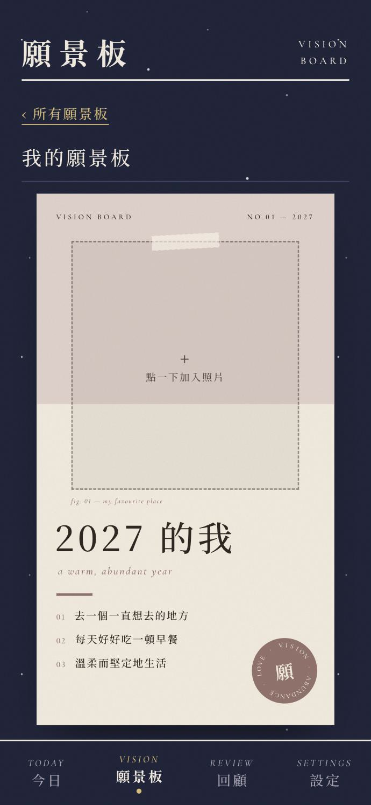
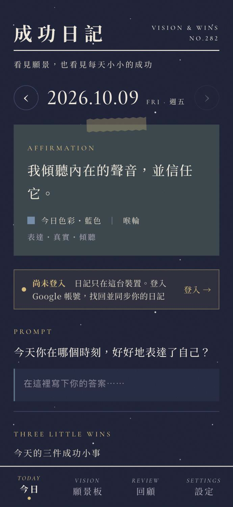
01 / 自我覺察
我們總是記得自己哪裡做不好，
卻忘了自己每天都在前進。
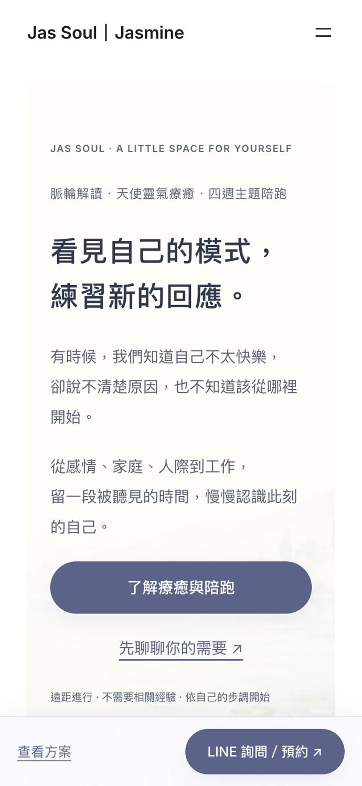
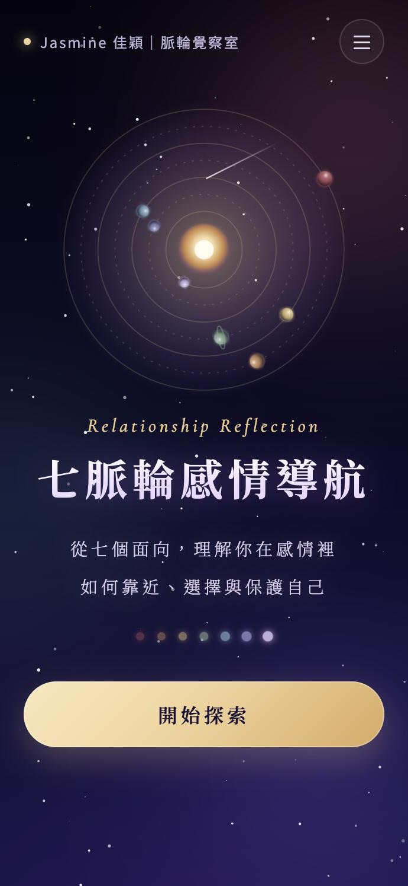
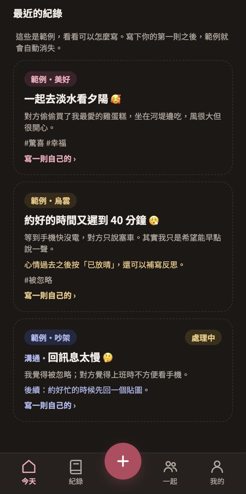
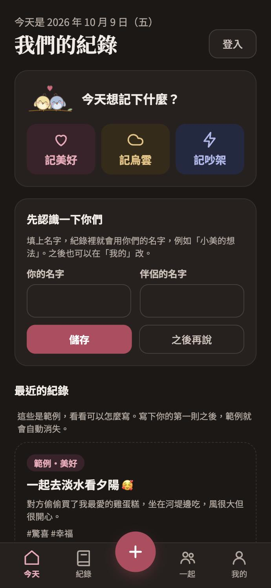
03 / 關係經營
記下一起的美好時刻，
也溫柔地面對烏雲與吵架。
Chapter VI
我曾在科技業擔任產品行銷與產品經理，經營過品牌社群、個人品牌，也協助講師打造 20+ 堂線上課程。這些年我最常做的事，就是找出受眾在意什麼，再讓他們看見你。
現在我把這些經驗變成四種服務：Threads 海巡代操、短影音剪輯、一對一自媒體陪跑，以及 AI 小工具開發。我也持續在 jas-soul.com 提供脈輪解讀療癒。
從選題、標題到留言互動，知道內容怎麼被看見；用 GA、UTM 和追蹤表確認什麼真的有效。
產品經理背景，用 AI 一個人從構想做到上線，已經完成三個產品，也用 AI 建立自己的剪輯流程。
參與 20+ 門線上課程規劃，擅長把專業整理成好懂、好用、學得完的結構。
Threads 經營短影音剪輯社群行銷SEOGA4AI 協作開發課程設計脈輪解讀
透過 LINE 分享近況或想法
確認方案、時間與內容
依方案進行，定期回報進度
一起看成效，再調整方向